华北水利水电大学（North China University of Water Resources and Electric Power）AstroGeo 科研团队。名称由 Astro（天体、星空、遥感观测）与 Geo（地球、地质、水文）组合而成， 四套方案均围绕「星—地」两条线索展开，兼顾 GitHub 头像的圆形裁切与小尺寸识别。
球体经纬网代表地球与地质构造，倾斜星轨环绕穿过，轨道末端一颗金色星体作为视觉焦点；球体下部融入水波，呼应学校水利水电特色。识别度最高，缩到 24px 仍能看出「星球 + 轨道」。
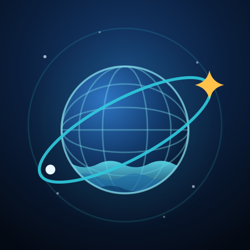
主标志上半部为星座星野，下半部由四层渐深的水波／地层带构成，中间一条明亮地平线分隔天地。叙事性最强，直接对应「天文 + 地质水文」的研究方向。
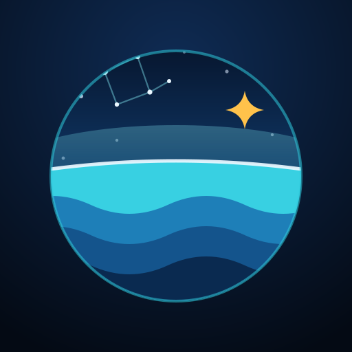
主标志以几何字母 A 为主形，顶点嵌一颗金色星，字腔（三角内部）留作星野，横画处理成一道轨道弧。结构最简洁、最接近成熟科研团队的标识语言，单色印刷、论文页眉、代码水印都能用。
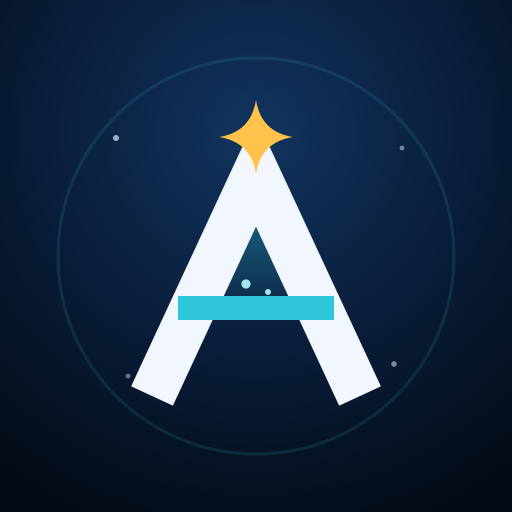
主标志在方案 C 的字母 A 基础上，把横画换成一道横贯全字的轨道环——环从 A 的两条腿中间穿过，形成「行星被星环贯穿」的结构。既有 A 的简洁骨架，又保留了 A 方案的星球意象，是四套里最有辨识度也最"重"的一版。
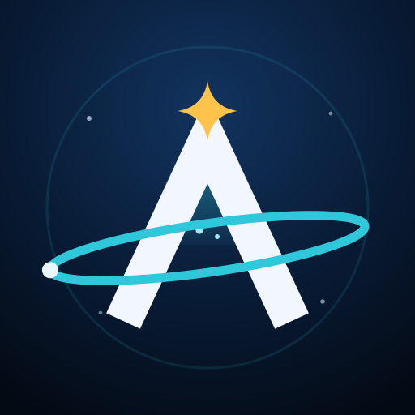
主标志用于 README 页头、组会 PPT 封面、论文致谢页。以方案 A 为主体，右侧为标准字与学校英文全名 NORTH CHINA UNIVERSITY OF WATER RESOURCES AND ELECTRIC POWER。已烘入深色底，白底页面直接可用。
图标 288 → 380px，标准字 108 → 160px，画布同步从 1280×400 放大到 1400×460，避免放大后顶边。
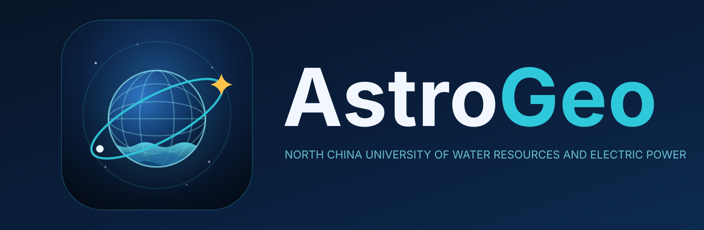
GitHub 仓库 Settings → Social preview 上传此图，链接分享到微信／Twitter／Slack 时显示的封面。星空 + 星座 + 底部水波，与头像同一套视觉语言。图标 260 → 350px，标准字 110 → 146px，地平线相应下移让出空间。
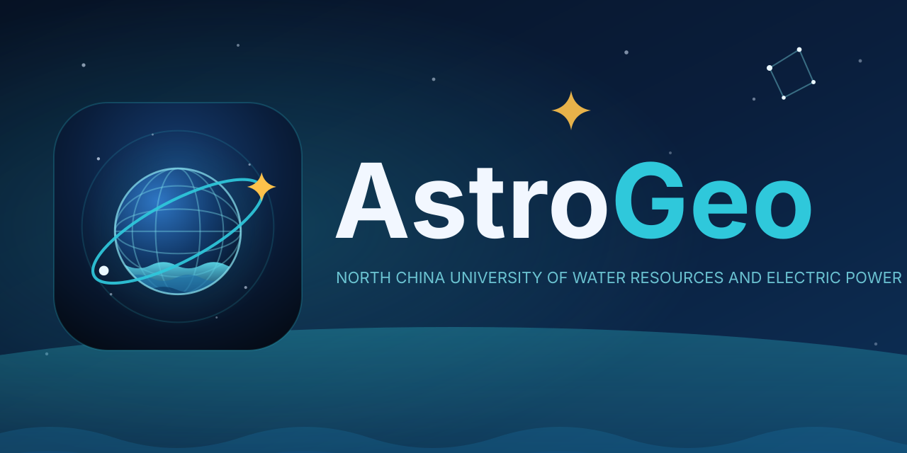
单色版用于印刷、论文页眉、印章、水印；方形圆角版用于 PPT、Notion、Slack 等不接受圆形裁切的场合。
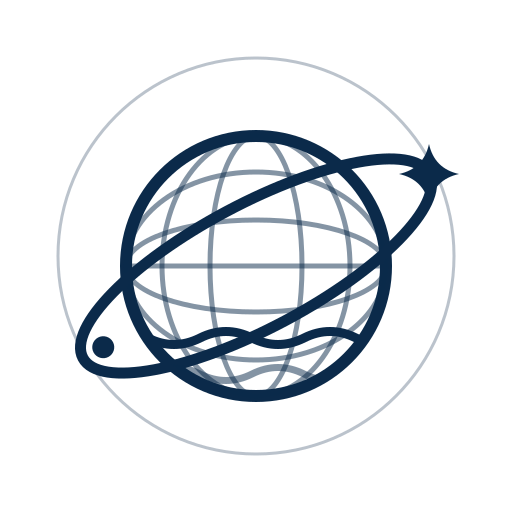
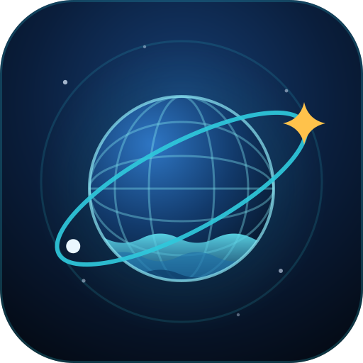
网站 favicon、GitHub Pages、桌面快捷方式用。这里做了一处关键处理：16 / 24 / 32px 换成简化版——去掉经纬网格和一层水波，把球体、轨道、金星加粗放大。原版细节图在这个尺寸下会糊成一团蓝斑，简化版才能保住「球 + 环 + 金星」三个特征点。48px 以上仍用完整细节版。
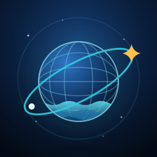
256px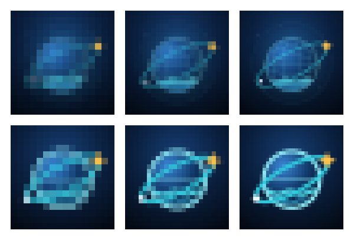
上排＝原版细节图，下排＝简化版，列依次为 16 / 24 / 32px 的原始像素放大。16px 一档差距最明显。
已定稿方案 A（星轨地球）。全部标志按用途分成 6 个文件夹，每个文件夹自带矢量源文件与位图导出，可以单独拷走使用。
AstroGeo-Logo/
├── index.html 预览页（本页）
├── 01-mark/ 主标志 · 定稿方案 A 星轨地球
│ ├── astrogeo-mark.svg 矢量源（可无损改色改字）
│ ├── astrogeo-mark-1024.png ← GitHub 团队头像用这个
│ ├── astrogeo-mark-{512,256,128,64,32}.png
│ ├── astrogeo-mark.webp 无损
│ ├── astrogeo-mark-rounded.svg 方形圆角版
│ └── astrogeo-mark-rounded-{1024…32}.png / .webp
├── 02-mono/ 单色版
│ ├── astrogeo-mark-mono-light.svg / -1024…32.png / .webp 反白，深色底用
│ ├── astrogeo-mark-mono-dark.svg / -1024…32.png / .webp 深蓝，浅色底与印刷用
│ └── on-background-preview.png 两种底色的实际效果预览
├── 03-favicon/ 图标 · 网站与桌面
│ ├── favicon.ico 内含 16/24/32/48/64/128/256 七个尺寸
│ ├── favicon-{16,24,32,48,192,256,512}.png
│ ├── astrogeo-mark-simple.svg 小尺寸简化版源文件（16-32px 用）
│ └── size-comparison.png 原版 vs 简化版 在 16/24/32px 的对比
├── 04-lockup/ 横向组合标志
│ ├── astrogeo-lockup.svg
│ ├── astrogeo-lockup-2000.png ← README 页头用这个
│ ├── astrogeo-lockup-1000.png
│ └── astrogeo-lockup.webp
├── 05-social-preview/ 仓库社交预览图
│ ├── astrogeo-social-preview.svg
│ ├── astrogeo-social-preview-1280x640.png ← GitHub Social preview 用这个
│ └── astrogeo-social-preview.webp
└── 06-alternates/ 备选方案（未采用，留档）
├── astrogeo-concept-B-horizon.svg / -1024.png / -512.png
├── astrogeo-concept-C-monogram.svg / -1024.png / -512.png
└── astrogeo-concept-D-astral-a.svg / -1024.png / -512.png
| 放到哪里 | 用哪个文件 |
|---|---|
| GitHub 团队头像 | 01-mark/astrogeo-mark-1024.png |
| 仓库 Social preview | 05-social-preview/astrogeo-social-preview-1280x640.png |
| README 页头 | 04-lockup/astrogeo-lockup-2000.png |
| 网站 favicon | 03-favicon/favicon.ico |
| 论文 / 印刷 | 02-mono/astrogeo-mark-mono-dark.svg |
| 印章 / 深色底水印 | 02-mono/astrogeo-mark-mono-light.svg |
| PPT / Notion / Slack | 01-mark/astrogeo-mark-rounded-1024.png |
| 要改配色或字形 | 改 .svg 源文件，矢量无损 |
.svg（可无损改色、改字）、多尺寸 .png、无损 .webp、七尺寸 favicon.ico，以及单色反白版、方形圆角版与社交预览图，全部收在 dist/。North China University of Water Resources and Electric Power（58 字符），单行大写排布，已按该长度重新排版以免溢出。